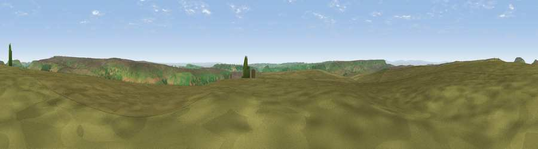

Bilsdale West Moor
#10283 in England · top 27% of its area beats it · near Chop GateThe view, rendered

A 360° render of this exact spot computed from the terrain model, tree cover and land cover — summer colours, afternoon light, calibrated against photographs of famous viewpoints. Real trees, hedges and buildings will differ in detail.
The panorama
Grey silhouette: terrain skyline in each direction (720 bearings, Earth curvature and refraction included). Dashed green: skyline with trees (+15 m) and buildings (+8 m) as obstacles. Blue strip: how far the ground is visible on each bearing.
Where the view opens
Wedge length = distance to the farthest visible ground on that bearing (vegetation-aware). Rings at 10, 25 and 50 km.
What fills the view
88% grassland · 8% woodland · 4% cropland
Angular shares of the visible panorama (visual magnitude), not map area. Landscape diversity 0.19 (0–1 Shannon).
Key numbers
More beautiful places nearby
The staircase of upgrades: each row has a higher view potential than everything closer. Driving times are estimates from straight-line distance, calibrated against real road routing — check an actual route before setting out.
| Place | Direction | Drive | Score |
|---|---|---|---|
| Noon Hill | NNW · 3 km | ~6 min | 67.8 |
| Viewpoint near Chop Gate | NW · 3 km | ~8 min | 68.7 |
| Viewpoint near Hawnby | SW · 5 km | ~12 min | 69.4 |
| Carlton Bank | NNW · 7 km | ~14 min | 85.1 |
| Roseberry Topping | N · 16 km | ~29 min | 85.8 |
| Viewpoint near Lazenby | N · 22 km | ~36 min | 86.4 |
| Warsett Hill | NNE · 29 km | ~45 min | 86.8 |
| Viewpoint near Easington | NE · 30 km | ~47 min | 90.2 |
54.36118, -1.15158 · source: osm peak · position refined by local search. Computed location — check access rights before visiting.